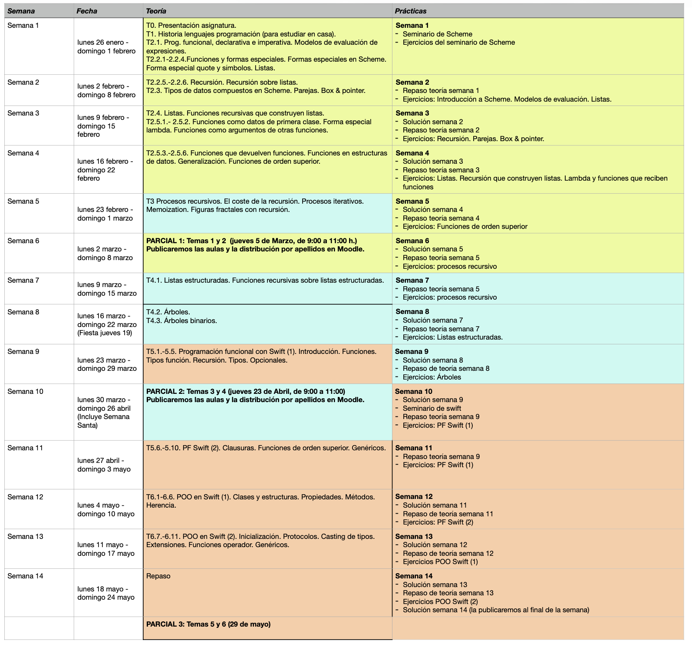
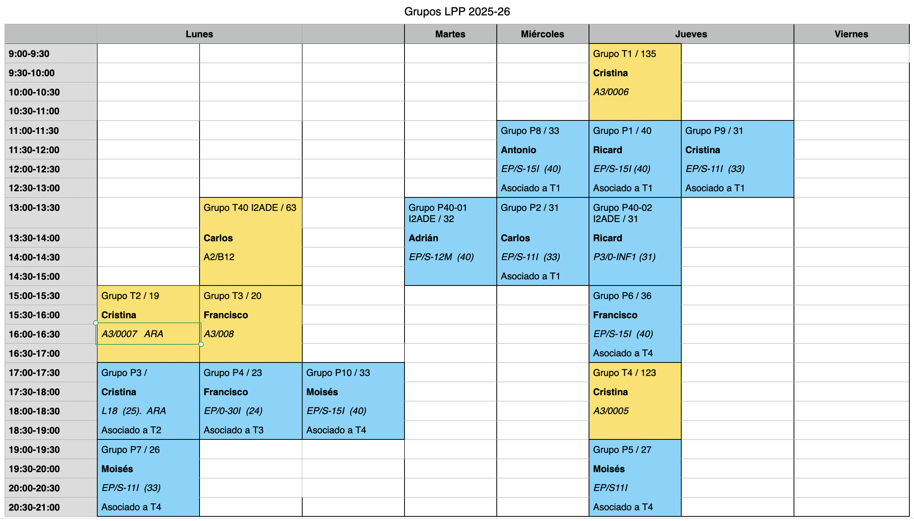

Programming Languages and Paradigms¶
1. Course Academic Information¶
Department of Computer Science and Artificial Intelligence
6 ECTS credits: 1 theory class of 2 hours and 1 lab class of 2
hours per week
Lecturers:
- Antonio Botía
- Carlos Cano
- Ricard Gasa
- Adrián González
- Francisco Martínez
- Moisés Moreno
- Cristina Pomares (Coordinator)
2. Course Resources¶
- Course description
- Course notes (theory, seminars, and labs)
- Moodle site open and accessible to the entire educational community; it contains the notes, slides, labs, and other teaching materials.
- Questions and announcements forum on the Moodle site.
3. Objectives and Skills¶
Objectives:
- What elements are common to programming languages?
- What language families or paradigms can we identify?
- What is functional programming?
- What is a multi-paradigm language that combines functional programming and object-oriented programming like?
By mastering these contents, it will be much easier to learn new programming languages, identify their essential aspects, and even be able to design specific languages oriented toward particular domains.
Skills:
- Know and differentiate the characteristics of the different programming paradigms (functional, procedural, and object-oriented programming) and identify them in specific programming languages.
- Differentiate between runtime and compile time in different contexts: error detection or the definition, creation, or lifetime of variables.
- Know the basic principles of functional programming: recursion, immutability, functions as first-class objects, higher-order functions, lambda expressions (closures).
- Know the problems derived from using mutation in imperative programming languages and the way to work with immutable structures in declarative and functional languages.
- Use abstraction and recursion to correctly design procedures and data structures (lists and trees).
- Be able to design, implement, and debug functional programs, specifically using the Scheme programming language.
- Be able to design, implement, and debug functional programs, specifically using the Swift programming language.
- Know the object-oriented programming and static type checking features of the Swift programming language. Know the use of generics and protocols provided by the language.
- Be able to implement Swift programs that use its object-oriented programming features, generics, and protocols.
4. Syllabus¶
4.1. Topic Blocks¶
The course is divided into 3 topic blocks, all of equal duration, in which the programming language shown in parentheses will be used:
- Functional programming (Scheme): topics 1 and 2
- Recursive processes and structures (Scheme): topics 3 and 4
- Functional programming in Swift and object-oriented programming (Swift): topics 5 and 6
The programming languages will be introduced through seminars taught in the lab classes.
- Seminar 1. The Scheme programming language: Primitives. Basic data types. Symbols. Strings. Lists. Function definition.
- Seminar 2. The Swift programming language. Interpreter and scripts. Basic data types. Operators. Control structures. Variable scope. Compound data types: tuples, arrays, and collections. Traversing collections. Mutable and immutable values. Initialization. Reference and value types in Swift.
4.2. Topics¶
- Topic 1. Programming languages: History of programming languages. Elements of programming languages. Abstraction. Programming paradigms. Compilers and interpreters.
- Topic 2. Functional Programming: Characteristics and history of the Functional Programming paradigm. Differences with the imperative paradigm. Declarative characteristics of the functional paradigm. Function definition. Functions as first-order data. The lambda special form. Variable scope and closures. Compound data in Scheme: pairs. Construction, traversal, and operations on lists. Lists with compound elements. Lists of lists.
- Topic 3. Recursive procedures: Design of recursive functions. Mutual recursion. Recursive and iterative processes. Memoization. Recursion and turtle graphics.
- Topic 4. Recursive structures: Recursive data structures: structured lists and trees.
- Topic 5. Functional programming in Swift: Multi-paradigm languages. Functional programming in Swift. Optional values. Lists. Pure recursion and tail recursion. Functions as first-order data. Closures and anonymous functions. Higher-order functions: collection mappings and filters.
- Topic 6. Object-Oriented Programming in Swift: Characteristics and history of the Object-Oriented Programming paradigm. Structures and classes in Swift. Inheritance. Advanced OOP concepts in Swift: Extensions, Protocols, and Generics.
The calendar of topics, labs, and exams can be seen in the following figure.

5. Labs¶
Labs are fundamental in the course and are intended to understand, work on, and deepen the concepts and skills studied in the theory classes.
For the development of the labs, we will use the following programming languages and development environments:
- Racket (a version of Scheme, a functional programming language)
- Swift (a multi-paradigm language created by Apple, with modern concepts of functional programming and object-oriented programming)
Each week you will have to complete a worksheet including 5 or 6 small programming problems related to the theory covered the previous week.
The worksheet will be available at the beginning of the week, and you will have the whole week to complete it. Once the lab has been submitted, you will be able to access its solution.
Review the lab solution
It is very important that you review the lab solution and compare it with the solution you obtained. Ask your lab lecturer if you have any questions about whether your solution is correct.
During the lab class, questions about the previous lab solution will be answered, and work will be done on the worksheet published that week. During the lab session, the lecturer will be available to answer questions and provide hints on how to approach the problems.
Questions that may arise during the week can also be discussed in the course forum (on Moodle) and in office hours with the lecturers. The forum is preferable, because in that way the answers and clarifications will be shared with the rest of your classmates.
6. Timetables¶
The distribution of groups for the 2025-26 academic year is as follows:

In theory sessions, it is exceptionally possible to attend a group other than the one assigned.
In lab sessions, you must attend the group to which you have been assigned. Any change of group must be requested from the EPS administration office.
7. Assessment¶
7.1. Ordinary Session C3 (Continuous Assessment)¶
The course is divided into 3 topic blocks, all of equal duration, in which the programming language shown in parentheses will be used:
- Functional programming (topics 1 and 2, Scheme)
- Recursion and recursive data structures (topics 3 and 4, Scheme)
- Functional programming in Swift and object-oriented programming (topics 5 and 6, Swift)
There will be three written midterm exams on the concepts of each of the topic blocks (theory and lab). The midterms will have the following weighting in the final grade:
- Midterm 1: 35%
- Midterm 2: 30%
- Midterm 3: 35%
No minimum grade is required in any of the midterms. Midterms 1 and 2 will take place during the semester. Midterm 3 will take place on the official exam date of the ordinary session for the course.
About mobile devices
During exams, you are not allowed to have any device with internet access on you (smartphones, smart watches, tablets, etc.). Before the test begins, they must be left inside backpacks, and the backpacks must be placed on the floor. Failure to comply with this rule invalidates the test and results in a grade of 0.
7.2. Extraordinary Session C4¶
In the extraordinary session, there will be a final exam on all topic blocks, and its grade will represent 100% of the course grade.
8. Advice for Successfully Learning the Course Contents¶
The fundamental advice for passing the course is to work every week and try to keep up with the pace of the course. The course concepts are built progressively, and what is seen in one week often depends on what was learned in previous weeks.
How should these concepts be studied? With the exception of some specific topics and sections (such as the history of programming languages or the characteristics of different paradigms), the course is mainly practical. When we talk about studying code examples, we mean understanding them, not memorizing them. It makes no sense to memorize the exercises and examples seen in class. You have to work through them. That means, first, understanding them on paper and, very importantly, trying all the examples in the interpreter. And trying means writing the examples and playing with them, proposing small variants, asking yourself what would happen if...? and testing it.
Regarding the labs and the proposed exercises, it is essential to struggle with them and try to solve them yourself without looking at any solution. It is the only way to learn: by trying, making mistakes, and finding the solution yourself.
When facing a problem, it is also essential to use pencil and paper to try approaches and find the simplest solution on paper before trying it in the interpreter. The exercises we propose are not excessively complicated. All of them are solved with very few lines of code, and coding them on the computer is not difficult once the solution has been found. By using pencil and paper, you will also be practicing a situation similar to the one you will face in the course exams.
In short: work every week, do all the exercises yourself, and do not get discouraged or fall behind.
Some comments from former students who passed the course are very interesting.
How to master the concepts
To pass the course, what I did was study a lot. You have to practice and, above all, understand the exercises rather than know them by heart. Once I had mastered the exercises, I proposed my own variants of them. That is how you really master it.
The problem of changing paradigm
The main challenge of the course is facing a change in the programming paradigm.
Working day by day
What I did was try to keep the whole course up to date, in addition to working with additional material in order to broaden and deepen my knowledge. LPP is a long-distance course where you have to maintain the work pace from the beginning to the end of the semester.
Do not copy the labs
The biggest problem, I think, is that many people relax and copy the labs as soon as they become a bit difficult or take more time than they would like. If you do not do the exercises yourself and struggle with them, this course is practically impossible to pass.
Do not memorize
Another thing is that you have to change the way you study. Memorizing is not enough, nor is doing many exercises without more. You have to understand recursion really well before practicing with exercises; otherwise it does not work. [...] In my opinion, the problem of LPP for many people is that for the exams they memorize the lab exercises from the solutions given in class.
Set yourself problems
The problems I encountered when taking LPP were that they were two completely new languages, another type of programming I had never seen before, and a different way of studying. To pass it, you simply have to do exercises and also set yourself new exercises.
9. Bibliography¶
The course notes are published on Moodle, with exercises, explanations, and examples of all the concepts studied, both in theory and in practice.
To expand on some concepts, the following references are recommended:
- Harold Abelson and Gerald Jay Sussman, Structure and Interpretation of Computer Programs, MIT Press, 1996
- Link to the online edition
- Call number at the Polytechnic Library: I.06/ABE/STR
- Apple, The Swift Programming Language
- The Racket Guide
Programming Languages and Paradigms, academic year 2025-26
© Department of Computer Science and Artificial Intelligence, University of Alicante
Domingo Gallardo, Cristina Pomares, Antonio Botía, Francisco Martínez